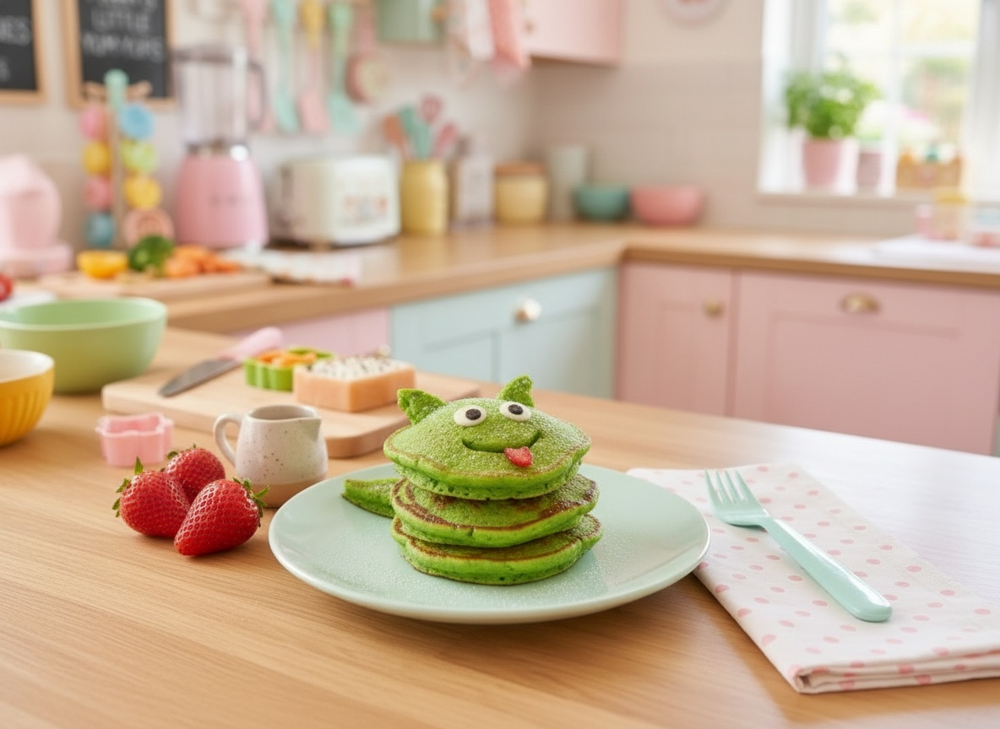

Every one of them comes with the 3-Step Cuteness Rule.
A 5-minute fruit bowl trick with a banana "dolphin"

Spinach pancakes kids beg for
Zucchini muffins that look like teddy bears
A showstopper birthday tower that's secretly beginner-friendly